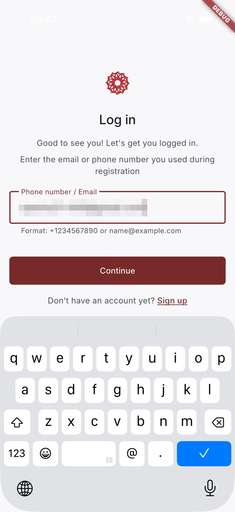
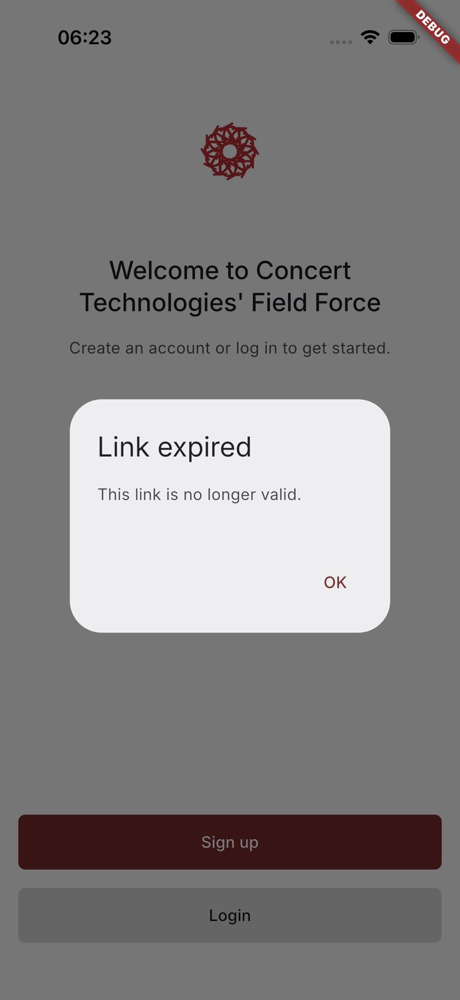
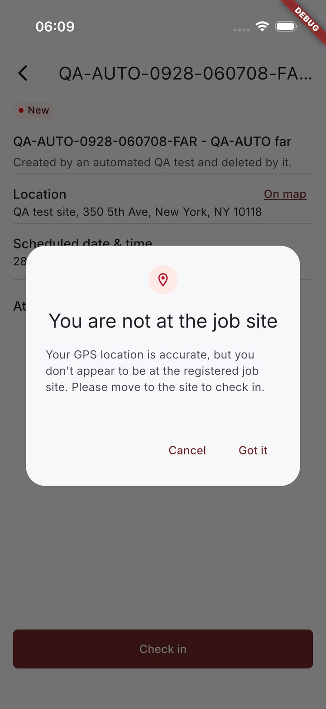
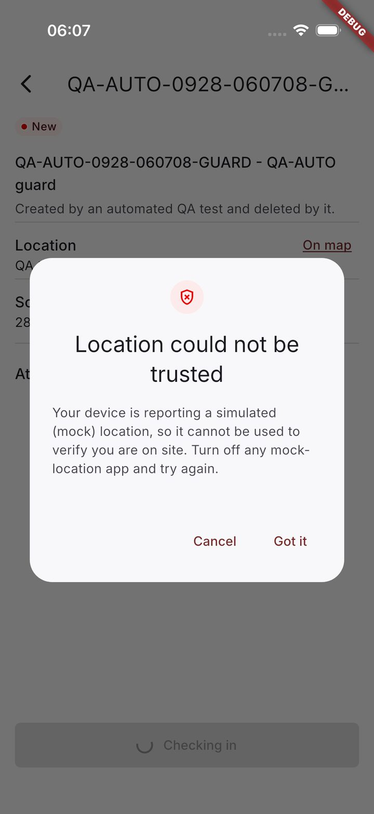
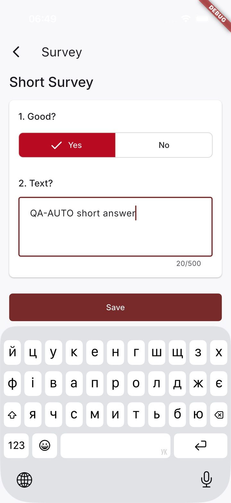
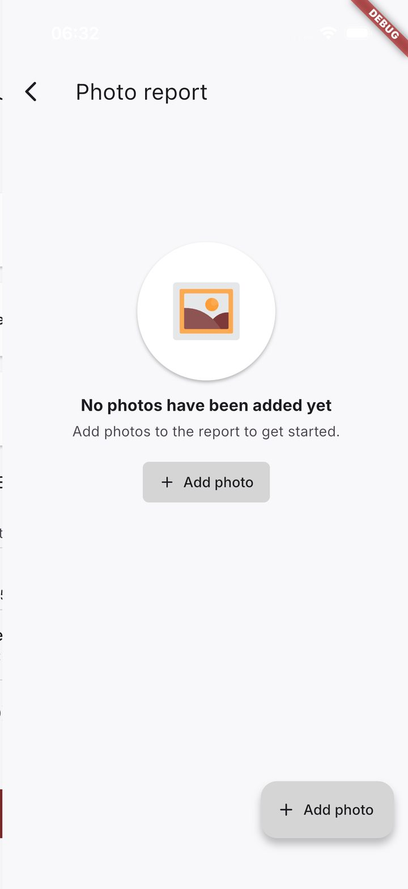
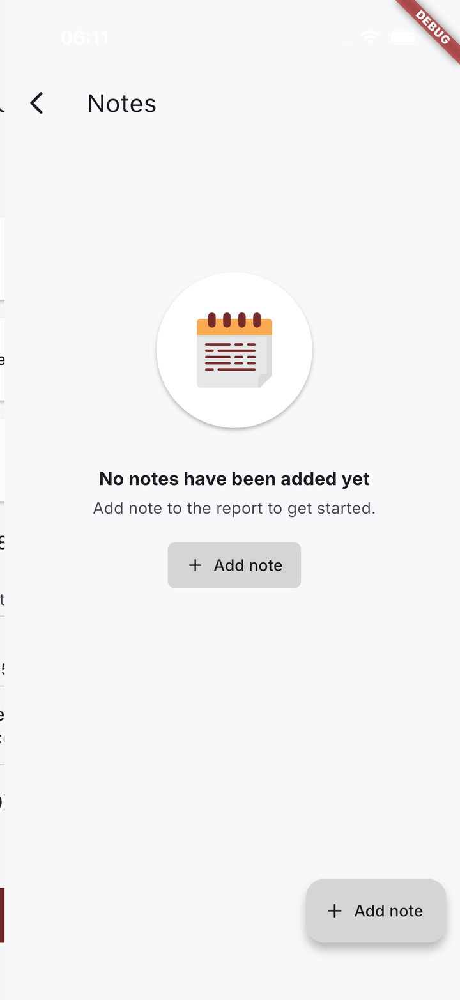
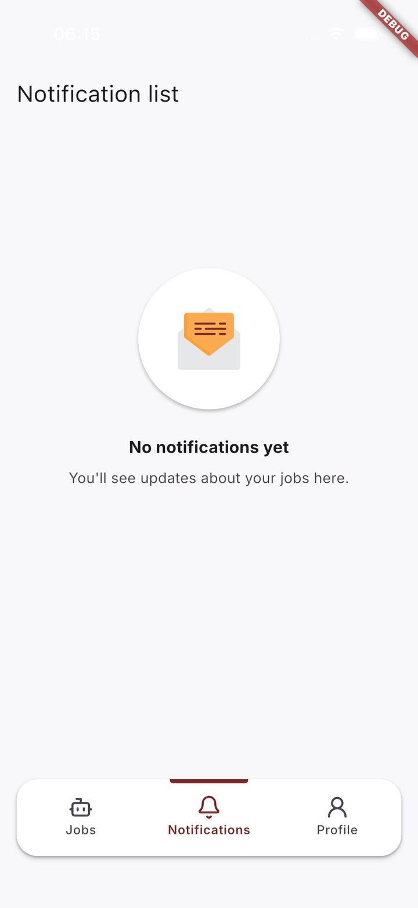
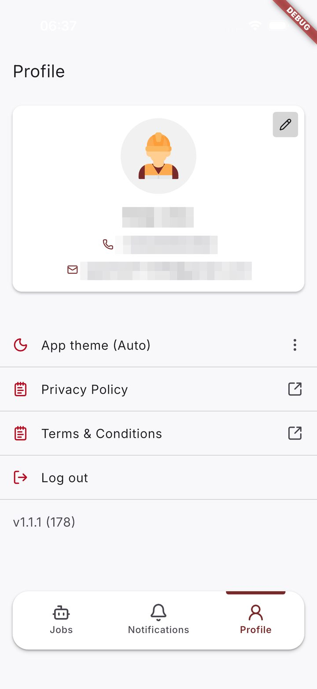

Concert Technologies Field Technicians iOS App — Test Completion Report Internal No unexpected failures
Nothing failed that is not already a known defect: the 5 red tests are the regression checks of 5 filed defects and stay red until they are fixed; 4 tests could not run (Blocked), each with its reason below — Blocked is never counted as passed.
Checklist now (this run): 449 green · 6 red, each held by a known defect · 7 blocked · 0 red and unexplained.
- Run finished
- 2026-09-28 04:13 UTC · 1 h 26 min
- Operating system
- iOS 26.5
- Device
- iPhone 17 — simulator
- App build
- Concert Technologies — [DEV] CT Mobile · 1.1.1 (178) · debug build
- App type
- Flutter
- App source
- development @ 85a84f3 (2026-08-26)
- Harness code
- 886de04
- Tests run
- 124 · 5 red · 4 blocked · 0 unexpected
- Report generated
- 2026-10-05 12:35 UTC
Document. Version of 2026-09-28 (the run this report describes) · Source: automation/mobile/reports/ios/internal/index.html · Online: https://claude.ai/artifact/Vh4DJSdzZmaGH7fwRMUbde · PDF: ConcertTechnologies_FieldTechnicians_iOS_TestCompletionReport_INTERNAL_2026-09-28.pdf · Confidential, TRIARE internal.
Summary
The QA checklist for the mobile app holds 645 checks across 12 modules. 462 of them (72%) are automated and ran on iPhone 17 — simulator, iOS 26.5. In this run 449 passed; 6 are held red by 5 open defects, each with a test that fails until the defect is fixed; 7 could not run for a stated reason. Nothing failed unexpectedly. The other 183 checks are not automated, each for a written reason (below).
What the tests saw
One screen per module, saved by a passing test at a checkpoint. Tap a screen to enlarge it; each module page has every screen next to the check it belongs to.



















By module
| Module | Checks | Automated | Passed | Held red | Blocked | Not automated | Coverage |
|---|---|---|---|---|---|---|---|
| 01 · Splash | 15 | 9 | 8 | 1 | 0 | 6 | |
| 02 · Authentication | 126 | 81 | 80 | 1 | 0 | 45 | |
| 03 · Order list | 70 | 52 | 46 | 4 | 2 | 18 | |
| 04 · Order details | 89 | 56 | 55 | 0 | 1 | 33 | |
| 05 · Check in out | 41 | 25 | 25 | 0 | 0 | 16 | |
| 06 · Order progress | 42 | 31 | 28 | 0 | 3 | 11 | |
| 07 · Submit deliverables | 33 | 28 | 27 | 0 | 1 | 5 | |
| 08 · Survey | 57 | 46 | 46 | 0 | 0 | 11 | |
| 09 · Photo report | 54 | 34 | 34 | 0 | 0 | 20 | |
| 10 · Notes | 52 | 41 | 41 | 0 | 0 | 11 | |
| 11 · Notifications | 31 | 26 | 26 | 0 | 0 | 5 | |
| 12 · Profile | 35 | 33 | 33 | 0 | 0 | 2 |
What needs a decision
- The priority of 7 open defects is QA's proposal — the owner / PM decide: BUG-SPL-001, BUG-SPL-002, BUG-AUTH-001, BUG-AUTH-002, BUG-AUTH-003, BUG-ORDL-001, BUG-ORDL-003
Open defects · 8
5 of them hold checklist checks red through their regression tests; a defect with no such test is listed with a dash (its report says why).
S3 minor: 6 · S4 cosmetic: 2. Every defect is filed locally, in the repository; no tracker is configured.
| Defect | Module | What is wrong | Severity | Priority | Checks held red |
|---|---|---|---|---|---|
| BUG-AUTH-003 | 02 · Authentication | After a connection error on the code screen, Verify does nothing until a digit is changed | S3 minor | P2 proposed | — (no test holds a check red) |
| BUG-SPL-001 | 01 · Splash | A deleted account stays signed in: the app keeps opening the Jobs list and the profile after a cold start | S3 minor | P2 proposed | SPL-009 |
| BUG-AUTH-001 | 02 · Authentication | Login with an unregistered phone number shows a generic error instead of "not registered" | S3 minor | P3 proposed | AUTH-122 |
| BUG-ORDL-001 | 03 · Order list | The weekly calendar keeps showing "No jobs" for jobs the refreshed Jobs list already shows | S3 minor | P3 proposed | ORDL-070 |
| BUG-ORDL-003 | 03 · Order list | "Updated" stays on a job after its details were opened, until the calendar is refreshed | S3 minor | P3 proposed | ORDL-022, ORDL-056 |
| BUG-ORDL-002 | 03 · Order list | The Jobs list is ordered by when a job was created, not by its scheduled date | S3 minor | P4 | ORDL-069 |
| BUG-SPL-002 | 01 · Splash | Android: the system Back on the splash screen leaves the app | S4 cosmetic | P3 proposed | — (no test holds a check red) |
| BUG-AUTH-002 | 02 · Authentication | Registration caps first and last name at 50 characters while the SRS allows 100 | S4 cosmetic | P4 proposed | — (no test holds a check red) |
Each defect has a report with steps, the expected and actual result, screenshots and its regression test, under qa/mobile/<module>/bugs/.
Could not run · 7 checks
4 tests stopped before their check could decide anything. Blocked is not a pass: the check stays owed and runs again in the next round — or on the Android stage, where the reason says so.
| Test | What it does | Checks | Why |
|---|---|---|---|
| TC-ORDD-004 | Tapping the PF phone opens the dialer with the number | ORDD-017 | iOS simulator limitation — there is no Phone app, the tap cannot open a dialer (owner, 2026-09-24, Q-ORDD-3). Runs in full on the Android emulator. |
| TC-ORDL-012 | Mismatch dialog: Cancel keeps the session, Log out ends it | ORDL-007, ORDL-008 | iOS simulator testing specific — the mismatch dialog closes by itself ~0.6 s after it appears (recon 4, 4 of 4); on a device it stays until a button is tapped (owner, 2026-09-24, Q-ORDL-8). Runs in full on Android. |
| TC-ORDP-006 | The PF phone on the In progress screen opens the dialer | ORDP-016 | iOS simulator limitation — there is no Phone app, the tap cannot open a dialer (owner, 2026-09-24, as Q-ORDD-3). Runs in full on the Android emulator. |
| TC-DLV-004 | The app's reaction to a successful submission: 'Deliverables sent to review successfully', 'Successful', then Check out, locked at once | DLV-020, ORDP-026, ORDP-027 | DEV answers POST /job/{id}/submit with 500 although the submission is recorded (COPS; owner, Q-DLV-5, 2026-09-26) — the app shows 'Server error. Try again later.', so its reaction to a successful submission cannot be observed |
Why 183 checks are not automated
Every one of them has a reason in its module's automation plan, test cases or an owner decision; qa/mobile/ios/not-automated.md collects them and the page sorts them into the kinds below. The full list, check by check, is in the technical detail.
| Reason | What it means | Checks |
|---|---|---|
| Offline — waits for the Android stage | A test cannot switch the iOS simulator's network off; the Android emulator's can, so these run in step 7 | 36 |
| Deferred — can be automated later | Right as worded and automatable; left out of the first pass by scope (Auth was a narrow pilot) | 36 |
| Kept manual by the owner | The owner ruled these stay manual checks; most were run by hand on iOS, a real device or production (the reason says which) | 32 |
| A person's check | A judgement no assertion can make, or something the accessibility tree does not show: design, motion, an icon, a 0.3-second banner | 24 |
| The app works differently — accepted | The checklist describes a control or a flow the app does not have; the owner accepted the app's behaviour | 15 |
| Beyond the simulator or outside the app | Needs hardware the simulator lacks (camera, a failed location fix) or the system's own screens (share sheet, other apps) | 15 |
| Failures a test cannot cause | A save, upload or navigation failure needs the app's storage or network broken mid-action | 10 |
| Not observable from the app on DEV | The outcome happens where neither the app nor the DEV API shows it: e-mail to a facilitator, a server schedule, a hard-coded DEV code | 9 |
| Requirement unclear or a placeholder | The item names no checkable outcome ("if allowed by business logic") | 3 |
| Load on DEV excluded | Load and performance are not run against the shared DEV server (decision 2026-09-23) | 2 |
| Covered by another check | Proved by a neighbouring check | 1 |
Stability and run history
The last 2 full runs gave the same verdict for every one of 124 tests — nothing flaky. Retries are off, so a flaky test could not hide behind a second attempt.
| Run | Finished (UTC) | Harness | Time | Tests | Passed | Red | Unexpected | Blocked | Verdict | Checks passed |
|---|---|---|---|---|---|---|---|---|---|---|
| stable-2 | 2026-09-28 02:45 | 886de04 | 1 h 26 min | 124 | 115 | 5 | 0 | 4 | Known only | 449 / 462 |
| stable-1 | 2026-09-28 01:17 | 7673885 (uncommitted changes) | 1 h 26 min | 124 | 115 | 5 | 0 | 4 | Known only | 449 / 462 |
| final-2 | 2026-09-27 13:13 | e4abaf8 | 1 h 18 min | 124 | 114 | 6 | 1 | 4 | Failed | 435 / 462 |
| final-1 | 2026-09-27 11:15 | a9b20d4 | 1 h 18 min | 124 | 113 | 7 | 2 | 4 | Failed | 430 / 462 |
Full-app runs only. Red counts every failed test; Unexpected is the part no filed defect names as its regression check. final-1 and final-2 were earlier attempts at the final run: the red there beyond the filed defects came from harness defects, each fixed before the series restarted. stable-1…3 ran the same harness code, 7015c46.
Delivery pace
The first module's tests landed in git on 23 September 2026, 16:12, the last on 27 September 2026, 12:19 (UTC+03:00) — 12 modules and 462 automated checks in about 92 hours of calendar time. Each step on the line is one commit that first added a module's test file; its height is the checks that module automates today. These are commit times, not hours of effort: the repository was set up on 22 September, and the harness, the checklist import and the recon on the simulator came first; each module's review and fixes continued after it landed.
- 02 · Authentication +81 · 23 Sep 16:12
- 03 · Order list + 01 · Splash +61 · 24 Sep 10:26
- 04 · Order details +56 · 24 Sep 13:32
- 05 · Check in out +25 · 24 Sep 14:50
- 06 · Order progress +31 · 24 Sep 15:31
- 08 · Survey +46 · 24 Sep 17:23
- 09 · Photo report +34 · 25 Sep 09:18
- 10 · Notes +41 · 25 Sep 21:09
- 07 · Submit deliverables +28 · 26 Sep 15:05
- 11 · Notifications +26 · 27 Sep 11:42
- 12 · Profile +33 · 27 Sep 12:19
Technical detail
How a verdict is decided
- Passed only when an assertion with a named oracle decided it: the checklist or the SRS, the app's accessibility tree, the pixels of a screenshot (a colour, the theme's brightness) or the DEV API's copy of what the app saved.
- Held red: a filed defect's regression test asserts the correct behaviour and fails until the fix; its report names the test. A fix turns it green by itself.
- Blocked (4 in this run) — a precondition the simulator or DEV cannot give — is never green and never silent; each says why.
- No retries. One Appium session per run. Every test was proven red once by breaking its own expectation (
--prove-red) before it was trusted.
Where to look
- Every check, its test and the screens it saw: open a module in the table under Summary; each defect's report opens from Open defects.
- Every step of every test: the Tests list at the bottom of a module page, or Allure —
allure open automation/mobile/reports/ios/allure-report. - Traceability of record:
qa/mobile/ios/final-traceability.mdandqa/mobile/<module>/ios/<module>-traceability.md. - Why a check is not automated:
qa/mobile/ios/not-automated.md; owner rulings:docs/notes/decisions.md. - This page:
automation/tools/mobile_summary.py.
Scope of this run
- Device: iPhone 17 · iOS 26.5.
- App: Concert Technologies — [DEV] CT Mobile 1.1.1 (178), built from development @ 85a84f3 (2026-08-26).
- Driver: Appium with XCUITest — the Flutter app is read through the iOS accessibility tree; one test at a time, the app relaunched or reset by each test's preconditions.
- Tools: Appium 3.4.2 · XCUITest 11.7.4 (installed on the QA machine when this report was built).
- DEV only; production is never tested. The API is used to create test data, clean up and check what the app stored — API tests are out of scope.
- Test data is created, marked (QA-AUTO-…) and deleted by the tests; a throwaway technician is registered and removed; the main test account's name and theme are put back.
How it is built
- Checklist → automation plan → the owner's answers to D / Q questions → recon on the simulator → structured test cases → screen maps (the only place a locator lives) → page objects → pytest tests tagged with checklist ids → generated traceability.
- Each module went through a test review (
/bmad-testarch-test-review) before it was called done. - Evidence: named screenshots at checkpoints, a screenshot on failure, a screen video of failed and end-to-end tests.
- This is the shared copy: the test account's email, phone and name are hidden in the text and pixelated on the screens; API response bodies, page sources and screen videos are left out (they stay in Allure on the QA machine).
Every check that is not automated, and why · 183
01 · Splash · 6
| CHK-SPL-004 | The app works differently — accepted | The logo is animated in the app and in Figma, not static (D-SPL-1 (owner, 2026-09-23)) |
| CHK-SPL-006 | A person's check | The status bar is drawn by iOS outside the app's tree — a visual check (01 plan) |
| CHK-SPL-010 | Not observable from the app on DEV | Loading configuration and metadata shows nothing on screen; no oracle (01 plan) |
| CHK-SPL-013 | A person's check | "Without visible delays or artifacts" is subjective (01 plan) |
| CHK-SPL-014 | A person's check | Manual by the owner's decision; the debug build starts in about 9 s, reported as information only (owner, 2026-09-24) |
| CHK-SPL-015 | Offline — waits for the Android stage | Slow start-up needs network throttling; the iOS simulator has none (01 plan) |
02 · Authentication · 45
| CHK-AUTH-006 | A person's check | Layout across screen sizes and orientations — visual; tablets out of scope (02 plan) |
| CHK-AUTH-011 | Deferred — can be automated later | Rapid double taps on Sign up / Login — deferred in the narrow Auth pilot (02 plan (owner, 2026-09-23)) |
| CHK-AUTH-012 | Deferred — can be automated later | Rapid double taps on Sign up / Login — deferred in the narrow Auth pilot (02 plan (owner, 2026-09-23)) |
| CHK-AUTH-013 | A person's check | "Without visual glitches or delays" is subjective; the navigation itself is proved by TC-AUTH-002 (02 plan) |
| CHK-AUTH-014 | A person's check | "Without visual glitches or delays" is subjective; the navigation itself is proved by TC-AUTH-002 (02 plan) |
| CHK-AUTH-015 | Failures a test cannot cause | A failed navigation cannot be induced without changing the app (02 plan) |
| CHK-AUTH-025 | A person's check | Layout across screen sizes and orientations — visual (02 plan) |
| CHK-AUTH-036 | Deferred — can be automated later | Country selector, its search, prefix and per-country phone format — deferred in the Auth pilot (02 plan (owner, 2026-09-23)) |
| CHK-AUTH-037 | Deferred — can be automated later | Country selector, its search, prefix and per-country phone format — deferred in the Auth pilot (02 plan (owner, 2026-09-23)) |
| CHK-AUTH-038 | Deferred — can be automated later | Country selector, its search, prefix and per-country phone format — deferred in the Auth pilot (02 plan (owner, 2026-09-23)) |
| CHK-AUTH-039 | Deferred — can be automated later | Country selector, its search, prefix and per-country phone format — deferred in the Auth pilot (02 plan (owner, 2026-09-23)) |
| CHK-AUTH-040 | Deferred — can be automated later | Country selector, its search, prefix and per-country phone format — deferred in the Auth pilot (02 plan (owner, 2026-09-23)) |
| CHK-AUTH-042 | Deferred — can be automated later | Numeric keyboard on the phone field — deferred in the Auth pilot (02 plan (owner, 2026-09-23)) |
| CHK-AUTH-048 | Deferred — can be automated later | One notification channel at a time — the radio state was not yet seen in the tree (02 plan) |
| CHK-AUTH-051 | Deferred — can be automated later | The channel stays selected; the channel is sent in the request (read back through the API) — deferred in the Auth pilot (02 plan (owner, 2026-09-23)) |
| CHK-AUTH-052 | Deferred — can be automated later | The channel stays selected; the channel is sent in the request (read back through the API) — deferred in the Auth pilot (02 plan (owner, 2026-09-23)) |
| CHK-AUTH-054 | Deferred — can be automated later | The SMS Terms close icon has no label (a testability defect) — deferred (02 plan (owner, 2026-09-23)) |
| CHK-AUTH-057 | Deferred — can be automated later | The SMS Terms close icon has no label (a testability defect) — deferred (02 plan (owner, 2026-09-23)) |
| CHK-AUTH-058 | Deferred — can be automated later | The SMS consent checkbox after returning from Terms — deferred in the Auth pilot (02 plan (owner, 2026-09-23)) |
| CHK-AUTH-059 | Requirement unclear or a placeholder | "Can be deselected if allowed by business logic" — no rule to check against (02 plan) |
| CHK-AUTH-065 | Deferred — can be automated later | Registration with the SMS channel — SMS goes to fictional 555-01xx numbers only; deferred (02 plan (owner, 2026-09-23)) |
| CHK-AUTH-067 | Deferred — can be automated later | Rapid taps on Continue must not create two users (count through the API) — deferred (02 plan (owner, 2026-09-23)) |
| CHK-AUTH-070 | Offline — waits for the Android stage | A registration failure on network loss — no network control on the iOS simulator (02 plan) |
| CHK-AUTH-076 | Deferred — can be automated later | Four OTP boxes are drawn; the tree holds one hidden field — deferred (02 plan (owner, 2026-09-23)) |
| CHK-AUTH-079 | Deferred — can be automated later | "Request a new code" after the countdown needs a 60-second wait — deferred (02 plan (owner, 2026-09-23)) |
| CHK-AUTH-081 | Deferred — can be automated later | OTP focus movement, digits only, at most four, paste, numeric keyboard — deferred in the Auth pilot (02 plan (owner, 2026-09-23)) |
| CHK-AUTH-082 | Deferred — can be automated later | OTP focus movement, digits only, at most four, paste, numeric keyboard — deferred in the Auth pilot (02 plan (owner, 2026-09-23)) |
| CHK-AUTH-083 | Deferred — can be automated later | OTP focus movement, digits only, at most four, paste, numeric keyboard — deferred in the Auth pilot (02 plan (owner, 2026-09-23)) |
| CHK-AUTH-084 | Deferred — can be automated later | OTP focus movement, digits only, at most four, paste, numeric keyboard — deferred in the Auth pilot (02 plan (owner, 2026-09-23)) |
| CHK-AUTH-085 | Deferred — can be automated later | OTP focus movement, digits only, at most four, paste, numeric keyboard — deferred in the Auth pilot (02 plan (owner, 2026-09-23)) |
| CHK-AUTH-086 | Deferred — can be automated later | OTP focus movement, digits only, at most four, paste, numeric keyboard — deferred in the Auth pilot (02 plan (owner, 2026-09-23)) |
| CHK-AUTH-087 | Covered by another check | The app submits after the fourth digit; there is no Verify tap — proved by CHK-AUTH-088 (D-5, 02 plan) |
| CHK-AUTH-092 | Not observable from the app on DEV | Duplicate Verify taps cannot happen with auto-submit (02 plan) |
| CHK-AUTH-093 | Not observable from the app on DEV | The OTP is hard-coded on DEV, so invalidating the previous code cannot be seen (02 plan) |
| CHK-AUTH-094 | Deferred — can be automated later | A new code and the restarted countdown — needs the countdown wait; delivery not observable on DEV (02 plan (owner, 2026-09-23)) |
| CHK-AUTH-095 | Deferred — can be automated later | A new code and the restarted countdown — needs the countdown wait; delivery not observable on DEV (02 plan (owner, 2026-09-23)) |
| CHK-AUTH-098 | Offline — waits for the Android stage | Slow network and connectivity failures during OTP — no network control on the iOS simulator (02 plan) |
| CHK-AUTH-099 | Offline — waits for the Android stage | Slow network and connectivity failures during OTP — no network control on the iOS simulator (02 plan) |
| CHK-AUTH-100 | Offline — waits for the Android stage | Slow network and connectivity failures during OTP — no network control on the iOS simulator (02 plan) |
| CHK-AUTH-101 | Deferred — can be automated later | The two-minute OTP lockout needs a dedicated account run serially — deferred (02 plan (owner, 2026-09-23)) |
| CHK-AUTH-102 | Requirement unclear or a placeholder | OTP state after reopening "according to business logic" — expected behaviour not defined (02 plan) |
| CHK-AUTH-112 | The app works differently — accepted | The app shows no "Format is incorrect." message (D-12 (owner, 2026-09-23)) |
| CHK-AUTH-113 | A person's check | Validation styling (colour, border) — a visual judgement (02 plan) |
| CHK-AUTH-120 | Deferred — can be automated later | Rapid taps on Continue at login — deferred in the Auth pilot (02 plan (owner, 2026-09-23)) |
| CHK-AUTH-124 | Offline — waits for the Android stage | A login failure on network loss — no network control on the iOS simulator (02 plan) |
03 · Order list · 18
| CHK-ORDL-014 | The app works differently — accepted | There are no New / In Progress / Completed filter buttons, in the app or in Figma (D-ORDL-1 (accepted)) |
| CHK-ORDL-021 | The app works differently — accepted | There is no "Unsubmitted" label on the card (D-ORDL-5 (accepted)) |
| CHK-ORDL-023 | A person's check | Badges readable across screen sizes — visual, one phone configuration by decision (03 plan) |
| CHK-ORDL-025 | Deferred — can be automated later | A single navigation per tap on a card — deferred, as the rapid-tap items in Auth (03 plan) |
| CHK-ORDL-030 | Kept manual by the owner | Jobs assigned through an SMS or e-mail link — verified by the owner on production; on DEV without COPS the link attaches nothing (owner, 2026-09-24) |
| CHK-ORDL-031 | Offline — waits for the Android stage | Cached list offline, the offline state, load errors, retry, recovery — no network control on the iOS simulator (03 plan) |
| CHK-ORDL-032 | Offline — waits for the Android stage | Cached list offline, the offline state, load errors, retry, recovery — no network control on the iOS simulator (03 plan) |
| CHK-ORDL-033 | Offline — waits for the Android stage | Cached list offline, the offline state, load errors, retry, recovery — no network control on the iOS simulator (03 plan) |
| CHK-ORDL-034 | Offline — waits for the Android stage | Cached list offline, the offline state, load errors, retry, recovery — no network control on the iOS simulator (03 plan) |
| CHK-ORDL-035 | Offline — waits for the Android stage | Cached list offline, the offline state, load errors, retry, recovery — no network control on the iOS simulator (03 plan) |
| CHK-ORDL-041 | The app works differently — accepted | No month and year above the week, in the app or in Figma (D-ORDL-6 (accepted)) |
| CHK-ORDL-045 | Deferred — can be automated later | The selected day and the days with jobs are shown by colour and an 8-px dot — a pixel oracle is possible later (03 plan) |
| CHK-ORDL-046 | Deferred — can be automated later | The selected day and the days with jobs are shown by colour and an 8-px dot — a pixel oracle is possible later (03 plan) |
| CHK-ORDL-059 | Deferred — can be automated later | Rapid taps on a card — deferred (03 plan) |
| CHK-ORDL-064 | Offline — waits for the Android stage | The calendar offline — Android stage (03 plan) |
| CHK-ORDL-065 | Offline — waits for the Android stage | The calendar offline — Android stage (03 plan) |
| CHK-ORDL-066 | A person's check | No flicker when switching weeks — subjective (03 plan) |
| CHK-ORDL-067 | Load on DEV excluded | Many jobs in the calendar — load on DEV excluded (decision 2026-09-23) |
04 · Order details · 33
| CHK-ORDD-006 | A person's check | The "Updated" banner lives about 0.3 s on the details — seen by eye, too short for a test (04 test cases (after recon 5)) |
| CHK-ORDD-009 | A person's check | Dividers between sections — visual (Figma) (04 plan) |
| CHK-ORDD-023 | The app works differently — accepted | The app has no own "Enable Location Services" prompt: it shows the system prompt, and Cancel ends the check-in (D-ORDD-9 (accepted)) |
| CHK-ORDD-025 | The app works differently — accepted | The app has no own "Enable Location Services" prompt: it shows the system prompt, and Cancel ends the check-in (D-ORDD-9 (accepted)) |
| CHK-ORDD-026 | The app works differently — accepted | The app has no own "Enable Location Services" prompt: it shows the system prompt, and Cancel ends the check-in (D-ORDD-9 (accepted)) |
| CHK-ORDD-029 | The app works differently — accepted | The app has no own "Enable Location Services" prompt: it shows the system prompt, and Cancel ends the check-in (D-ORDD-9 (accepted)) |
| CHK-ORDD-036 | Beyond the simulator or outside the app | Manual location entry appears only when no location fix comes in 15 s; the simulator always reports a location. Verified by the owner on a real device (05 test cases) |
| CHK-ORDD-037 | Beyond the simulator or outside the app | Manual location entry appears only when no location fix comes in 15 s; the simulator always reports a location. Verified by the owner on a real device (05 test cases) |
| CHK-ORDD-038 | Beyond the simulator or outside the app | Manual location entry appears only when no location fix comes in 15 s; the simulator always reports a location. Verified by the owner on a real device (05 test cases) |
| CHK-ORDD-039 | Beyond the simulator or outside the app | Manual location entry appears only when no location fix comes in 15 s; the simulator always reports a location. Verified by the owner on a real device (05 test cases) |
| CHK-ORDD-040 | Beyond the simulator or outside the app | Manual location entry appears only when no location fix comes in 15 s; the simulator always reports a location. Verified by the owner on a real device (05 test cases) |
| CHK-ORDD-041 | Beyond the simulator or outside the app | Manual location entry appears only when no location fix comes in 15 s; the simulator always reports a location. Verified by the owner on a real device (05 test cases) |
| CHK-ORDD-042 | Beyond the simulator or outside the app | Manual location entry appears only when no location fix comes in 15 s; the simulator always reports a location. Verified by the owner on a real device (05 test cases) |
| CHK-ORDD-043 | The app works differently — accepted | A refused permission cancels the check-in until the setting changes (D-ORDD-9 (accepted)) |
| CHK-ORDD-048 | Kept manual by the owner | Details offline, check-in offline, slow network — verified by the owner on iOS, works (Q-ORDD-4 (owner, 2026-09-24)) |
| CHK-ORDD-049 | Kept manual by the owner | Details offline, check-in offline, slow network — verified by the owner on iOS, works (Q-ORDD-4 (owner, 2026-09-24)) |
| CHK-ORDD-050 | Kept manual by the owner | Details offline, check-in offline, slow network — verified by the owner on iOS, works (Q-ORDD-4 (owner, 2026-09-24)) |
| CHK-ORDD-064 | Deferred — can be automated later | Scrolling a multi-page document, zoom — gestures plus pixel comparison, after the first pass (04 plan) |
| CHK-ORDD-065 | Deferred — can be automated later | Scrolling a multi-page document, zoom — gestures plus pixel comparison, after the first pass (04 plan) |
| CHK-ORDD-069 | Beyond the simulator or outside the app | Saving a document goes through the system share sheet, outside the app (D-ORDD-6) |
| CHK-ORDD-070 | The app works differently — accepted | No success toast: the system share sheet saves (D-ORDD-6 (accepted 2026-09-24)) |
| CHK-ORDD-071 | Beyond the simulator or outside the app | PDF opens in the app (TC-ORDD-007); DOC and XLS are handed to another app, and the simulator has none (D-ORDD-5 (accepted)) |
| CHK-ORDD-072 | Requirement unclear or a placeholder | A placeholder item; the app says "Could not open document" (04 plan) |
| CHK-ORDD-077 | Deferred — can be automated later | Pinch-to-zoom and panning a photo — gestures, after the first pass (04 plan) |
| CHK-ORDD-078 | Deferred — can be automated later | Pinch-to-zoom and panning a photo — gestures, after the first pass (04 plan) |
| CHK-ORDD-081 | Kept manual by the owner | Downloaded files offline, failures to load attachments, retry — verified by the owner on iOS, works (Q-ORDD-4 (owner, 2026-09-24)) |
| CHK-ORDD-082 | Kept manual by the owner | Downloaded files offline, failures to load attachments, retry — verified by the owner on iOS, works (Q-ORDD-4 (owner, 2026-09-24)) |
| CHK-ORDD-083 | Kept manual by the owner | Downloaded files offline, failures to load attachments, retry — verified by the owner on iOS, works (Q-ORDD-4 (owner, 2026-09-24)) |
| CHK-ORDD-084 | Kept manual by the owner | Downloaded files offline, failures to load attachments, retry — verified by the owner on iOS, works (Q-ORDD-4 (owner, 2026-09-24)) |
| CHK-ORDD-085 | Kept manual by the owner | Downloaded files offline, failures to load attachments, retry — verified by the owner on iOS, works (Q-ORDD-4 (owner, 2026-09-24)) |
| CHK-ORDD-086 | A person's check | No flicker between Documents and Photos — subjective (04 plan) |
| CHK-ORDD-088 | Load on DEV excluded | Many attachments — load on DEV excluded (decision 2026-09-23) |
| CHK-ORDD-089 | Kept manual by the owner | Attachment caching offline — verified by the owner on iOS (Q-ORDD-4 (owner, 2026-09-24)) |
05 · Check in out · 16
| CHK-CHIO-013 | Beyond the simulator or outside the app | Check-in / check-out flagged Manual without GPS — manual entry is unreachable on the simulator; verified by the owner on a real device (05 test cases) |
| CHK-CHIO-015 | Not observable from the app on DEV | The e-mail to the Project Facilitator after check-in / check-out is not visible to the app (Q-CHIO-2) |
| CHK-CHIO-019 | Beyond the simulator or outside the app | Check-in / check-out flagged Manual without GPS — manual entry is unreachable on the simulator; verified by the owner on a real device (05 test cases) |
| CHK-CHIO-021 | Not observable from the app on DEV | The e-mail to the Project Facilitator after check-in / check-out is not visible to the app (Q-CHIO-2) |
| CHK-CHIO-024 | Beyond the simulator or outside the app | Manual check-in allowed and flagged — unreachable on the simulator; verified by the owner on a real device (05 test cases, D-CHIO-5) |
| CHK-CHIO-025 | Beyond the simulator or outside the app | Manual check-in allowed and flagged — unreachable on the simulator; verified by the owner on a real device (05 test cases, D-CHIO-5) |
| CHK-CHIO-026 | Beyond the simulator or outside the app | Manual check-in allowed and flagged — unreachable on the simulator; verified by the owner on a real device (05 test cases, D-CHIO-5) |
| CHK-CHIO-027 | Kept manual by the owner | Check-in / check-out errors on network or server faults and retry — kept manual (Q-CHIO-3 (owner, 2026-09-24)) |
| CHK-CHIO-028 | Kept manual by the owner | Check-in / check-out errors on network or server faults and retry — kept manual (Q-CHIO-3 (owner, 2026-09-24)) |
| CHK-CHIO-029 | Kept manual by the owner | Check-in / check-out errors on network or server faults and retry — kept manual (Q-CHIO-3 (owner, 2026-09-24)) |
| CHK-CHIO-030 | Kept manual by the owner | Check-in / check-out errors on network or server faults and retry — kept manual (Q-CHIO-3 (owner, 2026-09-24)) |
| CHK-CHIO-031 | Kept manual by the owner | Check-in / check-out errors on network or server faults and retry — kept manual (Q-CHIO-3 (owner, 2026-09-24)) |
| CHK-CHIO-032 | Kept manual by the owner | Check-in / check-out errors on network or server faults and retry — kept manual (Q-CHIO-3 (owner, 2026-09-24)) |
| CHK-CHIO-033 | Not observable from the app on DEV | `GET /job/{id}` does not return the user id of the record, so "the correct User ID" cannot be proved (05 test cases) |
| CHK-CHIO-034 | Not observable from the app on DEV | `GET /job/{id}` does not return the user id of the record, so "the correct User ID" cannot be proved (05 test cases) |
| CHK-CHIO-038 | Kept manual by the owner | Responsive during slow GPS or network — kept manual (Q-CHIO-3 (owner, 2026-09-24)) |
06 · Order progress · 11
| CHK-ORDP-009 | The app works differently — accepted | There is no completion indicator on a deliverable (D-ORDP-1 (accepted)) |
| CHK-ORDP-029 | Kept manual by the owner | Submit disabled offline, the offline message, local progress, "Connection restored" — verified by the owner on iOS (Q-ORDP-2 (owner, 2026-09-24)) |
| CHK-ORDP-030 | Kept manual by the owner | Submit disabled offline, the offline message, local progress, "Connection restored" — verified by the owner on iOS (Q-ORDP-2 (owner, 2026-09-24)) |
| CHK-ORDP-031 | Kept manual by the owner | Submit disabled offline, the offline message, local progress, "Connection restored" — verified by the owner on iOS (Q-ORDP-2 (owner, 2026-09-24)) |
| CHK-ORDP-032 | Kept manual by the owner | Submit disabled offline, the offline message, local progress, "Connection restored" — verified by the owner on iOS (Q-ORDP-2 (owner, 2026-09-24)) |
| CHK-ORDP-033 | Kept manual by the owner | Submit disabled offline, the offline message, local progress, "Connection restored" — verified by the owner on iOS (Q-ORDP-2 (owner, 2026-09-24)) |
| CHK-ORDP-034 | Kept manual by the owner | Submit disabled offline, the offline message, local progress, "Connection restored" — verified by the owner on iOS (Q-ORDP-2 (owner, 2026-09-24)) |
| CHK-ORDP-035 | Kept manual by the owner | Submit disabled offline, the offline message, local progress, "Connection restored" — verified by the owner on iOS (Q-ORDP-2 (owner, 2026-09-24)) |
| CHK-ORDP-036 | Kept manual by the owner | Submit disabled offline, the offline message, local progress, "Connection restored" — verified by the owner on iOS (Q-ORDP-2 (owner, 2026-09-24)) |
| CHK-ORDP-037 | Kept manual by the owner | Submit disabled offline, the offline message, local progress, "Connection restored" — verified by the owner on iOS (Q-ORDP-2 (owner, 2026-09-24)) |
| CHK-ORDP-040 | Kept manual by the owner | Stored deliverables retried when back online — verified by the owner on iOS (Q-ORDP-2 (owner, 2026-09-24)) |
07 · Submit deliverables · 5
| CHK-DLV-003 | A person's check | The checkmark icon is not in the accessibility tree; it is seen on the screenshot (D-DLV-6) |
| CHK-DLV-023 | Offline — waits for the Android stage | Submission offline, the offline message, local storage, submission when back online (Q-DLV-1) |
| CHK-DLV-024 | Offline — waits for the Android stage | Submission offline, the offline message, local storage, submission when back online (Q-DLV-1) |
| CHK-DLV-025 | Offline — waits for the Android stage | Submission offline, the offline message, local storage, submission when back online (Q-DLV-1) |
| CHK-DLV-026 | Offline — waits for the Android stage | Submission offline, the offline message, local storage, submission when back online (Q-DLV-1) |
08 · Survey · 11
| CHK-SRV-018 | The app works differently — accepted | There is no completion mark on the Survey deliverable (D-SRV-8 = D-ORDP-1) |
| CHK-SRV-023 | Offline — waits for the Android stage | The survey offline and its sync — no network control on the iOS simulator (08 plan §7.5) |
| CHK-SRV-024 | Offline — waits for the Android stage | The survey offline and its sync — no network control on the iOS simulator (08 plan §7.5) |
| CHK-SRV-025 | Offline — waits for the Android stage | The survey offline and its sync — no network control on the iOS simulator (08 plan §7.5) |
| CHK-SRV-026 | Offline — waits for the Android stage | The survey offline and its sync — no network control on the iOS simulator (08 plan §7.5) |
| CHK-SRV-027 | Offline — waits for the Android stage | The survey offline and its sync — no network control on the iOS simulator (08 plan §7.5) |
| CHK-SRV-028 | Kept manual by the owner | Local save errors and failed photo uploads cannot be caused from a test; verified by the owner by hand on iOS (Q-SRV-3) |
| CHK-SRV-029 | Kept manual by the owner | Local save errors and failed photo uploads cannot be caused from a test; verified by the owner by hand on iOS (Q-SRV-3) |
| CHK-SRV-030 | Kept manual by the owner | Local save errors and failed photo uploads cannot be caused from a test; verified by the owner by hand on iOS (Q-SRV-3) |
| CHK-SRV-031 | Kept manual by the owner | Local save errors and failed photo uploads cannot be caused from a test; verified by the owner by hand on iOS (Q-SRV-3) |
| CHK-SRV-032 | Kept manual by the owner | Local save errors and failed photo uploads cannot be caused from a test; verified by the owner by hand on iOS (Q-SRV-3) |
09 · Photo report · 20
| CHK-PHR-010 | Beyond the simulator or outside the app | The simulator has no camera; the owner checked the camera by hand (Q-PHR-2 (owner, 2026-09-25)) |
| CHK-PHR-016 | A person's check | Crop and markup: the editor's canvas, palette and buttons are not in the accessibility tree (TD-PHOTO-001); a test only opens the editor. The owner checked them by hand (Q-PHR-3 (owner, 2026-09-25)) |
| CHK-PHR-017 | A person's check | Crop and markup: the editor's canvas, palette and buttons are not in the accessibility tree (TD-PHOTO-001); a test only opens the editor. The owner checked them by hand (Q-PHR-3 (owner, 2026-09-25)) |
| CHK-PHR-018 | A person's check | Crop and markup: the editor's canvas, palette and buttons are not in the accessibility tree (TD-PHOTO-001); a test only opens the editor. The owner checked them by hand (Q-PHR-3 (owner, 2026-09-25)) |
| CHK-PHR-019 | A person's check | Crop and markup: the editor's canvas, palette and buttons are not in the accessibility tree (TD-PHOTO-001); a test only opens the editor. The owner checked them by hand (Q-PHR-3 (owner, 2026-09-25)) |
| CHK-PHR-020 | A person's check | Crop and markup: the editor's canvas, palette and buttons are not in the accessibility tree (TD-PHOTO-001); a test only opens the editor. The owner checked them by hand (Q-PHR-3 (owner, 2026-09-25)) |
| CHK-PHR-021 | A person's check | Crop and markup: the editor's canvas, palette and buttons are not in the accessibility tree (TD-PHOTO-001); a test only opens the editor. The owner checked them by hand (Q-PHR-3 (owner, 2026-09-25)) |
| CHK-PHR-022 | A person's check | Crop and markup: the editor's canvas, palette and buttons are not in the accessibility tree (TD-PHOTO-001); a test only opens the editor. The owner checked them by hand (Q-PHR-3 (owner, 2026-09-25)) |
| CHK-PHR-023 | A person's check | Crop and markup: the editor's canvas, palette and buttons are not in the accessibility tree (TD-PHOTO-001); a test only opens the editor. The owner checked them by hand (Q-PHR-3 (owner, 2026-09-25)) |
| CHK-PHR-024 | A person's check | Crop and markup: the editor's canvas, palette and buttons are not in the accessibility tree (TD-PHOTO-001); a test only opens the editor. The owner checked them by hand (Q-PHR-3 (owner, 2026-09-25)) |
| CHK-PHR-045 | Offline — waits for the Android stage | Photos offline, local storage, upload and deletion when back online (Q-PHR-4 (owner, 2026-09-25)) |
| CHK-PHR-046 | Offline — waits for the Android stage | Photos offline, local storage, upload and deletion when back online (Q-PHR-4 (owner, 2026-09-25)) |
| CHK-PHR-047 | Offline — waits for the Android stage | Photos offline, local storage, upload and deletion when back online (Q-PHR-4 (owner, 2026-09-25)) |
| CHK-PHR-048 | Offline — waits for the Android stage | Photos offline, local storage, upload and deletion when back online (Q-PHR-4 (owner, 2026-09-25)) |
| CHK-PHR-049 | Offline — waits for the Android stage | Photos offline, local storage, upload and deletion when back online (Q-PHR-4 (owner, 2026-09-25)) |
| CHK-PHR-050 | Offline — waits for the Android stage | Photos offline, local storage, upload and deletion when back online (Q-PHR-4 (owner, 2026-09-25)) |
| CHK-PHR-051 | Failures a test cannot cause | Upload, edit and save failures and retry — skipped with a comment (Q-PHR-4 (owner, 2026-09-25)) |
| CHK-PHR-052 | Failures a test cannot cause | Upload, edit and save failures and retry — skipped with a comment (Q-PHR-4 (owner, 2026-09-25)) |
| CHK-PHR-053 | Failures a test cannot cause | Upload, edit and save failures and retry — skipped with a comment (Q-PHR-4 (owner, 2026-09-25)) |
| CHK-PHR-054 | Failures a test cannot cause | Upload, edit and save failures and retry — skipped with a comment (Q-PHR-4 (owner, 2026-09-25)) |
10 · Notes · 11
| CHK-NOTE-041 | The app works differently — accepted | There is no "required notes" setting (Q-NOTE-2, D-NOTE-3) |
| CHK-NOTE-043 | Offline — waits for the Android stage | Notes offline, local storage and sync when back online (Q-NOTE-1 (owner, 2026-09-25)) |
| CHK-NOTE-044 | Offline — waits for the Android stage | Notes offline, local storage and sync when back online (Q-NOTE-1 (owner, 2026-09-25)) |
| CHK-NOTE-045 | Offline — waits for the Android stage | Notes offline, local storage and sync when back online (Q-NOTE-1 (owner, 2026-09-25)) |
| CHK-NOTE-046 | Offline — waits for the Android stage | Notes offline, local storage and sync when back online (Q-NOTE-1 (owner, 2026-09-25)) |
| CHK-NOTE-047 | Offline — waits for the Android stage | Notes offline, local storage and sync when back online (Q-NOTE-1 (owner, 2026-09-25)) |
| CHK-NOTE-048 | Failures a test cannot cause | Save and delete failures and retry — skipped with a comment (Q-NOTE-1 (owner, 2026-09-25)) |
| CHK-NOTE-049 | Failures a test cannot cause | Save and delete failures and retry — skipped with a comment (Q-NOTE-1 (owner, 2026-09-25)) |
| CHK-NOTE-050 | Failures a test cannot cause | Save and delete failures and retry — skipped with a comment (Q-NOTE-1 (owner, 2026-09-25)) |
| CHK-NOTE-051 | Failures a test cannot cause | Save and delete failures and retry — skipped with a comment (Q-NOTE-1 (owner, 2026-09-25)) |
| CHK-NOTE-052 | Failures a test cannot cause | Save and delete failures and retry — skipped with a comment (Q-NOTE-1 (owner, 2026-09-25)) |
11 · Notifications · 5
| CHK-NOTIF-010 | A person's check | The icon by notification type is not in the accessibility tree; it is seen on the screenshot (Q-NOTIF-4) |
| CHK-NOTIF-017 | Not observable from the app on DEV | "Job starts today" comes from a server schedule at 8 AM; a test cannot trigger it (Q-NOTIF-1) |
| CHK-NOTIF-018 | Not observable from the app on DEV | "Job starts today" comes from a server schedule at 8 AM; a test cannot trigger it (Q-NOTIF-1) |
| CHK-NOTIF-029 | Offline — waits for the Android stage | Cached notifications offline (Q-NOTIF-2) |
| CHK-NOTIF-030 | Offline — waits for the Android stage | Cached notifications offline (Q-NOTIF-2) |
12 · Profile · 2
| CHK-PRF-015 | The app works differently — accepted | The email is not editable on Edit profile (D-PRF-1) |
| CHK-PRF-030 | Offline — waits for the Android stage | Log out offline (Q-PRF-4) |
Generated by automation/tools/mobile_summary.py from the repository, 2026-10-05 12:35 UTC. Every number above is read from the Allure results of the run, the checklists, the bug reports, qa/mobile/ios/not-automated.md and git.